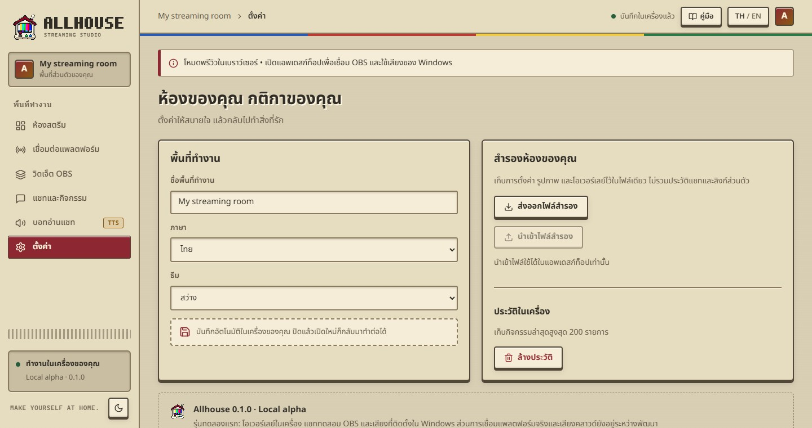

อาการที่เจอบ่อยและวิธีแก้ การสำรองข้อมูล และข้อมูลของคุณไปที่ไหนบ้าง
OBS ไม่เห็นอะไรเช็กว่าแอพเปิดอยู่ ลิงก์ถูกวาง และกด “เผยแพร่ทุกวิดเจ็ต” แล้ว ลองกดปุ่มทดสอบของวิดเจ็ตนั้นทดสอบแล้วไม่ขึ้นดูข้อความแจ้งในแอพ: วิดเจ็ตอาจปิดอยู่ คิวพักอยู่ หรือยังไม่มีหน้าวิดเจ็ตเปิดใน OBSเสียงแจ้งเตือนไม่ออกในไลฟ์ติ๊ก “Control audio via OBS” ใน Browser Source แล้วดูแถบเสียงใน OBS Audio Mixerไม่มีเสียงไทยเพิ่มเสียงไทยใน Windows (Settings → Time & language → Speech) หรือใช้เสียงออนไลน์ในหน้าบอทอ่านแชทYouTube “กำลังลองใหม่”ช่องยังไม่ได้ไลฟ์ แอพจะต่อให้เองเมื่อเริ่มไลฟ์TikTok “TikFinity is not running”เปิด TikFinity Desktop และล็อกอิน TikTok ไว้ก่อน แล้วกดเชื่อมต่อใหม่เปิดแอพไม่ขึ้น: Port 19324มี Allhouse อีกตัวเปิดอยู่ ปิดตัวนั้นก่อนแล้วเปิดใหม่แชทจริงไม่ถูกอ่านเช็กว่าบอทเปิดอยู่ แพลตฟอร์มนั้นไม่ได้ปิดเสียง และชื่อไม่ได้อยู่ในรายชื่อที่ไม่อ่าน
ในเครื่องการตั้งค่า ประวัติ รูป เสียง และลิงก์ OBS เก็บในเครื่องนี้เท่านั้นเสียงออนไลน์ถ้าเลือกเสียงออนไลน์ ข้อความที่จะอ่านจะถูกส่งไป Microsoft (เสียงของ Windows ไม่ส่งออกไปไหน)การเชื่อมแพลตฟอร์มแอพอ่านแชทสาธารณะของช่องที่คุณใส่ ไม่ได้ขอรหัสผ่านหรือ API key ใดๆคู่มือนี้เป็นไฟล์ในเครื่อง โหลดเฉพาะฟอนต์จาก Google Fonts ถ้าไม่มีเน็ตจะใช้ฟอนต์ในเครื่องแทนAllhouse 0.1.0 · Local alpha · คู่มือนี้อยู่ในเครื่องของคุณ เปิดได้โดยไม่ต้องใช้อินเทอร์เน็ต
 MANUAL
MANUAL